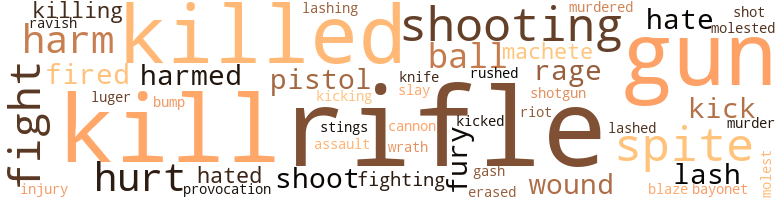

135 music-related terms matched in this text.
Most frequent terms in this topic: singing (26); sing (23); songs (19); song (15); music (12)

aria.n.01
Definition: an elaborate song for solo voice
| word |
sentence |
| aria |
Maybe it was an aria from Rigoletto , which at one time she had heard in Panama at the National Theater . |
dance.n.02
Definition: a party of people assembled for dancing
| word |
sentence |
| Dance |
He turned and walked over to the huge proprietor of the All Nations Dance Hall . |
dance.v.03
Definition: skip, leap, or move up and down or sideways
| word |
sentence |
| dance |
We 'll dance and dine And have some wine Ride in a bus With no one but us , Or maybe just a few , When we have our rendezvous . |
guitar.n.01
Definition: a stringed instrument usually having six strings; played by strumming or plucking
| word |
sentence |
| guitar |
You see , I have a tiny little bamboo hut with my guitar and books in it . |
| guitar |
Sometimes she sleep late while playing her guitar and not come home . " |
| guitar |
She had gone to her little hut where she practiced on her guitar , read and got away from everyone . |
| guitar |
In his letter he had said that some day she would play the guitar and he would stand beside her and sing , that such a time would be the happiest in his life . |
| guitar |
On the wall of the little hut near the guitar was a neat array of snapshots that Martin had sent her - pictures of him at the prow of a vessel looking off to sea , scenes along the waterfront in Hong Kong and Macao . |
| guitar |
It was good to play the guitar again . |
| guitar |
After that , time went by much more quickly and Adorita spent hours in the living room playing her guitar and singing soft love melodies as she dreamed of Martin 's return . |
| guitar |
Through the open windows came the sound of a guitar , and above its tinkling rhythm rose the glorious voice of Martin . |
| guitar |
" Was that you I heard playing the guitar ? " asked Martin . |
| guitar |
" But I heard you playing the guitar the other night - that Latin American song , ' Solas las Obres . ' " |
kick.v.04
Definition: kick a leg up
| word |
sentence |
| kick |
I run this ship , young fellow , and do n't you forget it , for if you do I 'll kick you until your backsides make a pillow cushion for the back of your head ! " |
| kick |
But if I kick you , wake up fast . |
music.n.01
Definition: an artistic form of auditory communication incorporating instrumental or vocal tones in a structured and continuous manner
| word |
sentence |
| music |
" I know , " returned Martin , as he handed her the words and music of his song , " But I thought maybe I could do something with them if I put them over myself . " |
| music |
Then she studied the music of the song . |
| music |
" Did you have help with this music ? " she asked . |
| music |
He com - posed the music . |
| music |
" How about music ? |
| music |
Then he went over to the closet , took out some sheets of music from his pocket and came back . |
| music |
He handed the music to Jimmy Coates . |
| music |
jimmy looked over the music without speaking . |
| music |
It was apparent he was listening to her music as she saw him stop occasionally and look over toward the hut . |
| music |
" Mr. Antonio sent me to school in Panama City to study music for two years . |
| music |
There 's something about music that - " He broke off . |
| music |
" That is - good music . |
piano.n.01
Definition: a keyboard instrument that is played by depressing keys that cause hammers to strike tuned strings and produce sounds
| word |
sentence |
| piano |
He walked over to the piano and ran his fingers across its polished surface . |
| piano |
She walked to the piano . |
| piano |
She nodded and sat down at the piano . |
| piano |
No time to orchestrate them now , but I 'll knock them out on the piano myself . |
| piano |
Jimmy told Martin to start moving around the tables and repeated that when he was ready to sing to be sure to come over and nudge him so he could get to the piano and be ready . |
| piano |
He reached out and touched his arm and Jimmy nodded and moved over to the piano . |
| piano |
Then he looked over and saw that Jimmy was at the piano watching him . |
| piano |
Jimmy was right with him at the piano and there was no break at the start . |
| piano |
Jimmy jumped up from the piano and shouted , " He 's going to give you another one , folks . |
| piano |
Martin moved over in front of some tables and lifted his voice , as Jimmy ac - companied him on the piano . |
| piano |
He found Jimmy , the orchestra leader , at the piano on the stage . |
pipe.n.04
Definition: a tubular wind instrument
| word |
sentence |
| pipe |
Travers took out his pipe and lighted it before he spoke again . |
rhythm.n.04
Definition: the arrangement of spoken words alternating stressed and unstressed elements
| word |
sentence |
| rhythm |
Through the open windows came the sound of a guitar , and above its tinkling rhythm rose the glorious voice of Martin . |
scat.n.01
Definition: singing jazz; the singer substitutes nonsense syllables for the words of the song and tries to sound like a musical instrument
| word |
sentence |
| scat |
Antonio jerked the animal to a halt , stepped down from his scat and walked on ahead . |
section.n.01
Definition: a self-contained part of a larger composition (written or musical)
| word |
sentence |
| section |
They had no time to wail over their loss , for the flames had spread into the business section of the city . |
| section |
This was the wealthy section of the city and it had been saved , as might be expected . |
sing.v.02
Definition: produce tones with the voice
| word |
sentence |
| sing |
Neither one of them found anything more to talk about , so Martin , his voice echoing back to him mockingly , exclaimed , " Shall we sing , Adorita ? " |
| sing |
" How about the song I heard you sing the other night - ' Solas las Obres ' ? " |
| sang |
As they sang they forgot the danger of their position . |
| sing |
But I do like to sing . " |
| sing |
You may remember how I used to like to sing - not to show off , but just for my own pleasure . |
| sing |
He came up on deck and asked me to sing some songs just for him . |
| sing |
American songs of course , not the kind I used to sing down there . |
| sang |
It was so mellow that sometimes I would get tears in my eyes when he sang . |
| sing |
In his letter he had said that some day she would play the guitar and he would stand beside her and sing , that such a time would be the happiest in his life . |
| sing |
You are now ready to sing popular songs . |
| sing |
She played a few bars and Martin started to sing the words of his song . |
| singing |
When he had finished singing the song Madame Caprolet stood up and softly clapped her hands . |
| sing |
" Well , " said Martin , " it occurred to me that it might be a novelty to have a waiter who could sing . |
| sing |
You know , wait on the people and sing songs at the same time . " |
| sing |
Can you sing ? " |
| sing |
" I want to sing my own songs , " he said . |
| sing |
Jimmy told Martin to start moving around the tables and repeated that when he was ready to sing to be sure to come over and nudge him so he could get to the piano and be ready . |
| singing |
Martin went over to the serving bar and as he waited for his order to be filled , he decided he might as well start singing to the man and the girls he was waiting on - the two girls might be of help in his " debut . " |
| sang |
" In the garden of my dreams , I 'll be waiting , dear , for you . . . Martin sang the words with the deepest feeling he could give to them . |
| sing |
No doubt they were a little stunned at seeing a waiter sing ! |
| sing |
" Which one of these do you want to sing next ? |
| singing |
They went along for a minute in silence , then Susie started singing softly , " When I have a rendezvous with you . . . we 'll have a talk . . . and take a walk . . . . " She laughed . |
| sing |
It was n't him standing before those people sing - ing his songs ... it was somebody else ... it was n't him who had held that girl in impassioned embrace ... it was someone else . |
| sing |
But three of them he liked very much and he made Martin sing them over and over again until he was satisfied he was giving them the best he could . |
| sing |
" I 'm all right , except there 's a little trouble about your sing - ing , son . " |
| sing |
But what gave her the greatest thrill was to sit in the bal - cony of the theatre and listen to Martin sing his songs and hear the yells and clapping of hands around her . |
| sing |
It might upset him so much he would not be able to sing . |
| sang |
I sang it with you - just to myself . " |
| sing |
" Do you sing ? " she demanded . |
| sing |
" Someday you must sing for me . " |
singing.n.01
Definition: the act of singing vocal music
| word |
sentence |
| singing |
Adorita began singing and Martin joined in . |
| singing |
Well , whenever I 'm alone I generally start singing . |
| singing |
But right now , Mr. Bowles - he 's my sponsor - makes her teach me popular singing - you know , the songs that the average person likes . |
| singing |
But Mr. Bowles is paying my expenses and expects that I can start on some kind of singing job very soon . |
| singing |
She had received a letter from Martin the day before telling about his singing career . |
| singing |
To learn oper - atic singing would take years of study . |
| singing |
But under the circumstances , I believe you should endeavor to get a job - singing in a cabaret or something . " |
| singing |
You have talent for writing as well as singing . |
| singing |
" You mean - you mean a singing waiter ? " |
| singing |
" We 're going to have a singing waiter . " |
| singing |
" A singing waiter ! " he grinned . |
| singing |
" He sug - gested the idea of singing to the customers while he served them drinks . |
| singing |
That will mean after three beats from the time you raise your hand , you start singing . |
| singing |
Then he counted three beats and started singing . |
| singing |
He paused a moment , then started singing . |
| singing |
" I could hardly call myself a celebrity , " he said , " but I am happy that my singing caught on . " |
| singing |
Before we closed up last night every waiter in the house - they came in a mob - came to me and started rais - ing hell about your singing . " |
| singing |
" If I were you I would go back to that girl - forget all about a career in singing . " |
| singing |
She leaned back on her pillow and stared up at the ceiling as she visualized Martin standing on the stage before an im - mense crowd of people , singing . |
| singing |
I was there the other night when you were singing . |
| singing |
He 's singing in some theatre . " |
| singing |
After that , time went by much more quickly and Adorita spent hours in the living room playing her guitar and singing soft love melodies as she dreamed of Martin 's return . |
| singing |
" I would never think of singing in front of anyone . |
song.n.01
Definition: a short musical composition with words
| word |
sentence |
| songs |
It seemed that the songs of the birds and the chattering of the monkeys had become stilled , as if they too were frightened by the fury of the storm . |
| song |
" How about the song I heard you sing the other night - ' Solas las Obres ' ? " |
| songs |
He came up on deck and asked me to sing some songs just for him . |
| songs |
But right now , Mr. Bowles - he 's my sponsor - makes her teach me popular singing - you know , the songs that the average person likes . |
| songs |
American songs of course , not the kind I used to sing down there . |
| song |
So it was that Adorita sat at the rough little table in the hut and painstakingly told Martin in her letter that she would dream of him standing before a great auditorium full of peo - ple , and that in her mind she could hear the strains of his song echoing back to her . |
| songs |
You are now ready to sing popular songs . |
| song |
" I 've written a little song - thought maybe it would be a good idea to introduce a few songs of my own . |
| songs |
" I 've written a little song - thought maybe it would be a good idea to introduce a few songs of my own . |
| song |
'' So - a song writer too ? " |
| song |
'' You know , song writing is a hard thing to do , young man . |
| song |
" I know , " returned Martin , as he handed her the words and music of his song , " But I thought maybe I could do something with them if I put them over myself . " |
| song |
Then she studied the music of the song . |
| song |
She played a few bars and Martin started to sing the words of his song . |
| song |
When he had finished singing the song Madame Caprolet stood up and softly clapped her hands . |
| song |
Of course , the song is - well , a little idealistic maybe for the popular taste . |
| songs |
You know , wait on the people and sing songs at the same time . " |
| songs |
Know any of the popular songs ? " |
| songs |
" I want to sing my own songs , " he said . |
| song |
When he fin - ished the song , there was a moment of dead silence , during which Martin 's heart sank to his boots . |
| song |
This song was light and gay and in decided contrast to the other one . |
| song |
Martin realized that he was a huge success and decided to do a bit of acting as he repeated the song , so he moved about the tables and when he came to the lines " I 'll hold you tight when we say goodnight ; maybe we 'll have a kiss or two , " he looked right into the eyes of one of the girls . |
| songs |
" Now you drop over tomorrow afternoon and get together with Jimmy about your songs , so that next time you can have a full orchestra back of you . |
| songs |
Maybe you 'd better write some more songs . |
| songs |
" I 've got plenty more , " smiled Martin , as he visualized the stack of songs he had written , never knowing whether they would be worth anything or not . |
| songs |
" And I liked those songs . " |
| song |
" A song writer is always happy when someone remembers his songs . " |
| songs |
" A song writer is always happy when someone remembers his songs . " |
| songs |
" Did you write those songs yourself ? " she asked , looking at him with increasing admiration . |
| songs |
It was n't him standing before those people sing - ing his songs ... it was somebody else ... it was n't him who had held that girl in impassioned embrace ... it was someone else . |
| songs |
He took the several songs that Martin handed to him and started playing them over . |
| songs |
At the appointed time , Martin , clad in his waiter 's uniform , and waiting to approach the proper table , went into one of the songs he and Jimmy had rehearsed . |
| songs |
But what gave her the greatest thrill was to sit in the bal - cony of the theatre and listen to Martin sing his songs and hear the yells and clapping of hands around her . |
| song |
" But I heard you playing the guitar the other night - that Latin American song , ' Solas las Obres . ' " |
tune.n.01
Definition: a succession of notes forming a distinctive sequence
| word |
sentence |
| Lines |
Lines of rail extended for miles between two steep mountains - as far as the eye could see . |
| melody |
She started playing a sad melody . |
| melody |
Suddenly she broke off the melody and moved quickly to the window . |
| melodies |
After that , time went by much more quickly and Adorita spent hours in the living room playing her guitar and singing soft love melodies as she dreamed of Martin 's return . |
whistle.v.01
Definition: make whistling sounds
| word |
sentence |
| whistle |
Finally weariness overcame him and he fell asleep only to awaken with a start at the sound of a whistle from the speaking tube . |
143 violence-related terms matched in this text.
Most frequent terms in this topic: rifle (17); kill (15); killed (11); gun (10); shooting (6)

aggravation.n.02
Definition: unfriendly behavior that causes anger or resentment
| word |
sentence |
| provocation |
" lie hit me without provocation ! " |
bayonet.n.01
Definition: a knife that can be fixed to the end of a rifle and used as a weapon
| word |
sentence |
| bayonet |
He lifted his gun and jabbed the point of the bayonet into Cecil 's side . |
blaze_away.v.02
Definition: shoot rapidly and repeatedly
| word |
sentence |
| blaze |
" When you mentioned shooting I looked around to see what I could blaze away at and saw the two eyes at the edge of the bushes . " |
bump.n.01
Definition: a lump on the body caused by a blow
| word |
sentence |
| bump |
He could now feel the great moist bump . |
cannon.n.04
Definition: heavy automatic gun fired from an airplane
| word |
sentence |
| cannon |
There was not a sound except the distant rumble of rifles and cannon to the south , where the liberals and conservative troops were peppering away at each other . |
cut.n.05
Definition: a wound made by cutting
| word |
sentence |
| gash |
Martin noticed again the red gash on his cheek . |
erase.v.01
Definition: remove from memory or existence
| word |
sentence |
| erased |
It might leave a morbid thought in their minds that would never be erased . |
fight.n.02
Definition: the act of fighting; any contest or struggle
| word |
sentence |
| fighting |
" Do you realize we may get into bad trouble if we go too close to the fighting ? " demanded Cecil . |
| fighting |
It was a half-hour later before they came to a large ware - house building , which was quite close to the fighting . |
fight.n.05
Definition: a boxing or wrestling match
| word |
sentence |
| fight |
He had described the hot , tropical sun boiling down from the heavens and how he had nearly lost his head in a fight with one of the machete - wielding natives . |
| fight |
" These hombres are big enough to carry a gun and help in the fight against the rebels . |
fight.v.02
Definition: fight against or resist strongly
| word |
sentence |
| fight |
Should he fight back ? |
| fight |
" Let 's see if your wealthy father taught you how to fight ! " he cried . |
| fight |
The rest of the time I fight off the men and try to keep them from pawing me to pieces . |
fury.n.01
Definition: a feeling of intense anger
| word |
sentence |
| fury |
It seemed that the songs of the birds and the chattering of the monkeys had become stilled , as if they too were frightened by the fury of the storm . |
| rage |
His rage at the beating that was being given to him made him feel that he would have been a match for this man . |
| fury |
They flashed on and off in a red fury . |
| rage |
" He gets into a rage and - well , I 'm terribly afraid ! " |
gun.n.01
Definition: a weapon that discharges a missile at high velocity (especially from a metal tube or barrel)
| word |
sentence |
| gun |
The little monkey was brought back to consciousness by the noise of the gun and it scurried off into the limbs of the tree with low , whimpering sounds . |
| gun |
He took his gun and left Las Sabbana - told my stepmother he was going to Los Angeles , where Martin is now staying ! " |
| gun |
Manuel shoved the gun in Martin 's direction . |
| gun |
Much better that I forget my love by using this gun . " |
| guns |
" There will be no guns , " he told her . |
| guns |
Against the gray sky to the south there came intermittent Hashes of light followed by the pounding of guns . |
| guns |
Off in the distant fields and gullies , they could see the Hashes of light coming from exploding guns and the misty forms of the con - servative party as they endeavored to protect the route to Panama City . |
| gun |
" These hombres are big enough to carry a gun and help in the fight against the rebels . |
| gun |
He lifted his gun and jabbed the point of the bayonet into Cecil 's side . |
| gun |
If they do n't say rveneer ' right away , point the gun at them and pull the trigger . " |
| gun |
He heard gun shots coming from down toward the ditch . |
| gun |
" But have you got a gun ? " |
| gun |
" This one would kill a jaguar , " he remarked as he inspected the gun to make sure it was loaded and in good working order . |
harm.v.01
Definition: cause or do harm to
| word |
sentence |
| harmed |
At least you have not been physically harmed , thank the Lord . |
| harm |
" Did he harm my brother ? " |
| harm |
No , he did not harm your brother . |
| harmed |
He had not been harmed by her father ! |
hate.v.01
Definition: dislike intensely; feel antipathy or aversion towards
| word |
sentence |
| hate |
" I 'd hate to have the act go by the boards . |
| hated |
Also , they were forced to help with the dishes , a job that Martin hated , but he knew that his mother was trying to make enough money to save up so they could leave Culebra and go away to some lovely place on Caledonia Road . |
| hated |
" I sure hated to leave Montego Bay ! " exclaimed Cecil . |
| hate |
I hate popular stuff . |
injury.n.01
Definition: any physical damage to the body caused by violence or accident or fracture etc.
| word |
sentence |
| harm |
She said it would always keep me from harm . |
| harm |
I did no harm to Adorita ! " |
| injury |
The headmaster looked at Martin and saw no sign of injury . |
kick.v.04
Definition: kick a leg up
| word |
sentence |
| kick |
I run this ship , young fellow , and do n't you forget it , for if you do I 'll kick you until your backsides make a pillow cushion for the back of your head ! " |
| kick |
But if I kick you , wake up fast . |
kick_back.v.02
Definition: spring back, as from a forceful thrust
| word |
sentence |
| kicking |
They walked over and Martin started kicking back some dried branches . |
| kicked |
But he kicked the ground for a moment , then asked , " Antonio - does - does Manuel give you a lot of help ? |
kill.v.10
Definition: cause the death of, without intention
| word |
sentence |
| killed |
" Let 's go see if I killed anything . " |
| killed |
He had killed him ! |
| kill |
" I did n't mean to kill - a human being . " |
| killed |
" If you had n't killed him , he would have killed us , " she reminded him . |
| killed |
" If you had n't killed him , he would have killed us , " she reminded him . |
| killed |
Think of it as though you had killed a savage beast . " |
| killed |
You might have been killed otherwise . |
| kill |
If he went back , probably they 'd kill him next time . |
| killed |
It had just been vacated by a family whose father had been killed on the canal , and the mother and children had been forced to return to the island of Martinique . |
| kill |
He had read it and was going to Los Angeles to kill Martin ! |
| kill |
He was going to Los Angeles to find Martin and kill him - kill him for being untrue to her ! |
| kill |
He was going to Los Angeles to find Martin and kill him - kill him for being untrue to her ! |
| kill |
My father has gone to Los Angeles to kill him ! " |
| kill |
" Why in the world would your father want to kill Martin ? " |
| kill |
" I have come to kill you - or take you back to the rancho - whichever you prefer ! " |
| kill |
I came to take you back to my daughter - or kill you . |
| kill |
" I would prefer to kill you right now , if I did what I wanted to ! " |
| killing |
I care not if I 'm hanged for killing this dog of a man ! " |
| killed |
Had Manuel killed him ? |
| killed |
" You killed him ! " exclaimed Cecil , noting the expression on her face . |
| killed |
She had killed him rather than - rather than - No ! |
| kill |
" No , I did n't kill him . |
| kill |
I was about to kill myself when you so rudely interrupted me ! " |
| kill |
But I never kill them . |
| killing |
I do n't believe in killing animals , unless needed for food . |
| killed |
" One of the leaders of the loyal - ists - a woman by the name of Conchita , was killed last night . |
| kill |
" This one would kill a jaguar , " he remarked as he inspected the gun to make sure it was loaded and in good working order . |
| kill |
They 've been known to kill intruders , and they are so cunning in the woods that it 's hard to track them down and prove anything . " |
knife.n.02
Definition: a weapon with a handle and blade with a sharp point
| word |
sentence |
| knife |
Evidently he had been cut with a knife and the wound had never properly healed . |
luger.n.01
Definition: a German semiautomatic pistol
| word |
sentence |
| luger |
The woman was holding a German luger in one hand . |
machete.n.01
Definition: a large heavy knife used in Central and South America as a weapon or for cutting vegetation
| word |
sentence |
| machete |
He had described the hot , tropical sun boiling down from the heavens and how he had nearly lost his head in a fight with one of the machete - wielding natives . |
| machete |
" Never go traveling in this land , boy , with - out a rifle or machete . |
malice.n.01
Definition: feeling a need to see others suffer
| word |
sentence |
| spite |
In spite of their utter lack of morals , most of them were quite beautiful . |
| spite |
" In spite of everything , I feel like a better man for having met you . " |
| spite |
In spite of herself the tears crept down her cheeks . |
| spite |
" You still love him - in spite of all this ? '' |
| spite |
He had been a good father to the boys , in spite of the fact that he was gone most of time , carrying on his duties as ship 's mate . |
| spite |
Martin fell fast asleep in spite of Cecil 's warning . |
molest.v.01
Definition: harass or assault sexually; make indecent advances to
| word |
sentence |
| molest |
But if you ever molest this boy again I 'll have you tossed into the brig ! " |
| molested |
They took the situation lightly and assured Harriette that no matter who won , she would not be molested and could carry on as usual . |
murder.n.01
Definition: unlawful premeditated killing of a human being by a human being
| word |
sentence |
| murder |
" Are n't you afraid they 'll murder him ? " grinned Jimmy . |
murder.v.01
Definition: kill intentionally and with premeditation
| word |
sentence |
| murdered |
You may get murdered at that . |
| slay |
" Of course I 'll miss Mamina , but a fellow ca n't slay with his mother all his life , can he ? " |
musket_ball.n.01
Definition: a solid projectile that is shot by a musket
| word |
sentence |
| ball |
He felt eager for some activity , so he called out to a tall blond English youth who was about to throw the ball . |
| ball |
Throw the ball to inel " The blond youth stared at him with a frown . |
| ball |
" I do n't play ball with the sons of laborers ! " |
open_fire.v.01
Definition: start firing a weapon
| word |
sentence |
| fired |
Martin suddenly raised his rifle , aimed and fired . |
| fired |
If I fired all of them I 'd have to get a gang that would be just as bad . " |
pain.v.02
Definition: cause emotional anguish or make miserable
| word |
sentence |
| hurt |
He would not rest easy if Martin had been hurt . |
| hurt |
What would happen to him if he got sick or hurt while on the ship - with no doctor - no one to take care of him ? |
| hurt |
" If he is evil enough to hurt you , knowing of your love , he should be - well --- " " But you do n't know my father ! " she said . |
| hurt |
He hoped he 'd never get hurt and be sent to such a place . |
pistol.n.01
Definition: a firearm that is held and fired with one hand
| word |
sentence |
| pistol |
This was partly due to the fact that Antonio would not hear of it until Martin learned to shoot both a Winchester rifle and a bulldog pistol . |
| pistol |
Hardly had he finished speaking when they heard sounds of pistol shots nearby . |
rape.n.03
Definition: the crime of forcing a woman to submit to sexual intercourse against her will
| word |
sentence |
| assault |
That they would make an assault on the town seemed certain . |
rape.v.01
Definition: force (someone) to have sex against their will
| word |
sentence |
| ravish |
The fires had been stopped prior to the rain at a wide avenue , and they had not been able to cross this thoroughfare and ravish the other side of the town . |
rifle.n.01
Definition: a shoulder firearm with a long barrel and a rifled bore
| word |
sentence |
| rifle |
This was partly due to the fact that Antonio would not hear of it until Martin learned to shoot both a Winchester rifle and a bulldog pistol . |
| rifle |
Antonio amazed Martin with his ability to shoot a rifle . |
| rifle |
He carried a small rifle that Antonio had given him to use ; also in his jacket pocket was a compass and over his shoulder a kit-bag with food , shotgun shells and a bottle of cold , flavored brown sugar , ginger tea . |
| rifle |
Martin suddenly raised his rifle , aimed and fired . |
| rifle |
Martin reached for his rifle . |
| rifle |
Martin cautiously reached for the rifle , but before he could get hold of it , the animal slunk off into the night , evidently just as scared as they were . |
| rifles |
They were carrying rifles . |
| rifles |
" Well , what the helll Give them rifles and station them at the water tank , " snorted the general . |
| rifles |
The soldiers left the boys alone outside the tent for a few moments and then returned with two ancient-looking rifles and cartridge belts . |
| rifle |
He took the rifle from Cecil and ex - plained . |
| rifle |
You refill the rifle with cartridges this way . " |
| rifle |
The two boys watched with interest as he showed them how to load the rifle and throw out the empty cartridges . |
| rifles |
There was not a sound except the distant rumble of rifles and cannon to the south , where the liberals and conservative troops were peppering away at each other . |
| rifle |
Martin sprang up and grabbed the rifle . |
| rifle |
Cecil had thrown his rifle down , but Martin clung to his . |
| rifle |
As he and Cecil started off , keeping the rifle proved to be the thing that kept his earthly career from being over forever . |
| rifle |
For as he ran he tripped on the rifle and fell to the ground , just as a bul - let zinged over his head . |
| rifle |
" Never go traveling in this land , boy , with - out a rifle or machete . |
| rifle |
The head of the snake started weaving back and forth , its eyes now con - centrating on the opening in the rifle barrel . |
| rifle |
He showed him how to ride a horse , throw a lariat , and also gave him some training in shooting , both with a revol - ver and rifle . |
| rifle |
If you go out alone in the woods be sure to take a rifle and watch for wild animals and snakes . |
riot.n.01
Definition: a public act of violence by an unruly mob
| word |
sentence |
| riot |
The whole countryside was a riot of color . |
rush.v.02
Definition: attack suddenly
| word |
sentence |
| rushed |
Adorita was in her bedroom preparing for bed when Hilda Babbs rushed in . |
shoot.v.02
Definition: kill by firing a missile
| word |
sentence |
| shoot |
I know you would n't shoot those monkeys . |
| shot |
Suppose they had found the body of the youth who had been shot by Martin and traced them to their hideout ? |
| shoot |
" Guess all I can do is shoot it in the head and you and I pull the carcase back off the road into the grass , " said Antonio at last . |
shooting.n.02
Definition: killing someone by gunfire
| word |
sentence |
| shooting |
Martin was never able to do that , but he did become skilled enough so that he could hit the tin can eight times out of ten , which Antonio said was good shooting . |
| shooting |
" When you mentioned shooting I looked around to see what I could blaze away at and saw the two eyes at the edge of the bushes . " |
| shooting |
" But why is he shooting at God ? " |
| shooting |
This was a new one on Martin - shooting at God because He brought rain ! |
| shooting |
They continued to walk along , the sound of the shooting getting nearer and nearer . |
| shooting |
He showed him how to ride a horse , throw a lariat , and also gave him some training in shooting , both with a revol - ver and rifle . |
shotgun.n.01
Definition: firearm that is a double-barreled smoothbore shoulder weapon for firing shot at short ranges
| word |
sentence |
| shotgun |
He carried a small rifle that Antonio had given him to use ; also in his jacket pocket was a compass and over his shoulder a kit-bag with food , shotgun shells and a bottle of cold , flavored brown sugar , ginger tea . |
sting.n.03
Definition: a painful wound caused by the thrust of an insect's stinger into skin
| word |
sentence |
| stings |
In the branches overhead there might be deadly insects , the stings of which would poison them and bring lingering death . |
whip.v.04
Definition: strike as if by whipping
| word |
sentence |
| lashing |
A lashing wind and rain that churned the sea into great billows of foam tossed the ship into tremendous caverns from which it seemed it would never rise again . |
| lashed |
Peterson came out onto the bridge deck and , noticing the runaway lifeboat , bellowed orders to the bosun to have it lashed firm . |
| lash |
Several sailors appeared from protective spots on the deck and grabbed the lifeboat , attempting to pull it back into position where they could lash it fast to some iron braces . |
| lash |
There was complete silence except for the lash of the waves against Rocky Cliff below . |
wound.n.01
Definition: an injury to living tissue (especially an injury involving a cut or break in the skin)
| word |
sentence |
| wounds |
Martin 's wounds healed quickly under the vigor of his youth . |
| wound |
Evidently he had been cut with a knife and the wound had never properly healed . |
wrath.n.01
Definition: intense anger (usually on an epic scale)
| word |
sentence |
| wrath |
Sud - denly the heavens let loose their wrath . |
39 religion-related terms matched in this text.
Most frequent terms in this topic: God (19); devil (5); prayers (2); heavens (2); church (2)
cathedral.n.02
Definition: the principal Christian church building of a bishop's diocese
| word |
sentence |
| cathedral |
The two outstanding places of beauty in the town were the spacious park filled with tropical foliage and the majestic cathedral which towered like a monu - ment atop a hillside overlooking the sea . |
church.n.02
Definition: a place for public (especially Christian) worship
| word |
sentence |
| church |
The services were conducted by a kindly priest in a little white church not far from where they lived . |
| church |
The church was filled with mourners , mostly rugged men with gnarled hands - men who had worked with Harry and knew him as a kindly companion . |
church.n.04
Definition: the body of people who attend or belong to a particular local church
| word |
sentence |
| Church |
They wended their way to the little frame cottage at the other end of Church Street . |
eden.n.01
Definition: any place of complete bliss and delight and peace
| word |
sentence |
| heaven |
" I shall wait until I 'm a very old lady , " she had replied , stifling her sobs , " and then I shall wait after that until I meet you in heaven . " |
| Heaven |
" I guess you mean to Heaven , Mother ? " |
| Heaven |
" Somehow I feel that Mother is already in some glorious abode in Heaven . |
| heavens |
Sud - denly the heavens let loose their wrath . |
| heavens |
He had described the hot , tropical sun boiling down from the heavens and how he had nearly lost his head in a fight with one of the machete - wielding natives . |
god.n.03
Definition: a man of such superior qualities that he seems like a deity to other people
| word |
sentence |
| God |
" You know , maybe God meant for me to come with you . |
| God |
They lighted the forest as if a million flashbulbs were being exploded by God 's camera - men . |
| God |
Anyway , I 've left Captain Travers , God bless him . |
| God |
God bless you all and someday I 'll be home and you 'll never have to work again in that old boarding house . |
| god |
To her , Martin was a young god and whatever he did was right and proper . |
| God |
God bless you , darling , and try to forgive me , for , like in the Bible , I guess , I know not what I did . |
| God |
Just as soon as you go I shall kneel and pray to the good God to see that all comes out well . " |
| God |
If I do not see you before I leave , please take care of Mother while I 'm away - you and the nurse - and in your prayers be sure to ask God to spare her life until I return . " |
| God |
God was indeed good to her ! |
| God |
God is good , " whispered Harriette . |
| God |
God had taken her to His bosom . |
| God |
But , thank God , my sweet , that you are here to share this moment with me . " |
| God |
" I 've learned that you were with Mother to the last , God bless you . |
| God |
" Let us all go to Mother 's grave and kneel and pray - Let her know that God is good to all of us - that her children and her children 's loved ones shall live as one happy family in peace and understanding - always ! " |
| God |
These men have crushed legs , broken backs , malaria , fever and God knows what ! |
| God |
" Because he figured God brought this rain and is cheating him out of some centavos , " laughed the man . |
| God |
This was a new one on Martin - shooting at God because He brought rain ! |
| God |
" Well , I 'm an old friend of your father 's , God bless his soul . |
| God |
Give me God 's fresh air . " |
| God |
They 're God 's creatures and have a right to live the same as men do . " |
godhead.n.01
Definition: terms referring to the Judeo-Christian God
| word |
sentence |
| Divine |
Give me wisdom to do what is right , and dear God , keep the soul of my beloved husband in peace and close to Your Divine Presence . |
prayer.n.01
Definition: the act of communicating with a deity (especially as a petition or in adoration or contrition or thanksgiving)
| word |
sentence |
| prayers |
You will always be in my prayers even though we can never - " She did not finish the sentence , but turned and entered the house without looking back . |
| prayers |
If I do not see you before I leave , please take care of Mother while I 'm away - you and the nurse - and in your prayers be sure to ask God to spare her life until I return . " |
saint.n.02
Definition: person of exceptional holiness
| word |
sentence |
| angel |
It seemed to him that she looked like a sleeping angel as she lay there with her long lashes blotting out the beauty of her lustrous eyes . |
satan.n.01
Definition: (Judeo-Christian and Islamic religions) chief spirit of evil and adversary of God; tempter of mankind; master of Hell
| word |
sentence |
| devil |
" I 'll teach you , you little devil , to ruin my daughter ! " |
| devil |
" What the devil ! " he roared . |
| devil |
" Did you see that poor devil who was whipped against the stanchion ? " |
| Devil |
He gestured toward the body , and chuckled , " Another item for old Massa Devil . " |
| devil |
Peterson will be locked in the brig before morning - he and that galley devil . |
| devil |
They 're mad as the devil because they think I 'll get all the big tips . " |